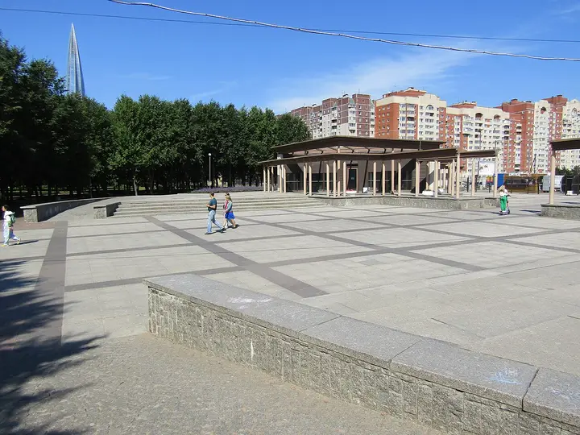

Фото: Germash19, CC BY-SA 4.0 · Wikimedia Commons
Парк · Приморский район
Парк 300-летия Санкт-Петербурга
Молодой парк на берегу залива: длинный мол, вид на Лахта Центр и закаты прямо над водой — особенно хорош вечером.
- ₽ · до 1 500 ₽ на человека
- Новое в каталоге
- в 2 планах
Позвать сюда: Парк 300-летия Санкт-ПетербургаОткрыть в каталоге: Парк 300-летия Санкт-ПетербургаМаршрут до места: Парк 300-летия Санкт-Петербурга
Адрес и детали
- Адрес
- Приморский пр., 74
Открыть на Яндекс Картах (в новой вкладке) - Метро
- м. Беговая
- Район
- Приморский район
- Цена
- до 1 500 ₽ на человека
- Часы работы
- круглосуточно · проверили в октябре 2026
- Телефон
- +7 (812) 345-10-80
- Проверено
- работает — проверили в октябре 2026
Планы с этим местом 2
- Лахта Центр: обзорная площадка и набережная · Смотровая площадка · м. Беговая
- 24 минуты пешкомПарк 300-летия Санкт-Петербурга · Парк
Панорама города и залива с самого высокого небоскрёба Европы, а потом прогулка по молу парка 300-летия — солнце садится прямо в воду.
Открыть план: Лахта: 83-й этаж и закат над заливомПозвать сюда: Лахта: 83-й этаж и закат над заливом
Фото: TomPlay148, CC BY-SA 3.0 · Wikimedia Commons
- Парк 300-летия Санкт-Петербурга · Парк · м. Беговая
- 24 минуты пешкомЛахта Центр: обзорная площадка и набережная · Смотровая площадка
Прогулка по длинному молу на закате, а потом подъём на 83-й этаж самого высокого небоскрёба Европы — огни города и залива.
Открыть план: Мол парка 300-летия и ЛахтаПозвать сюда: Мол парка 300-летия и Лахта
Фото: Germash19, CC BY-SA 4.0 · Wikimedia Commons


Похожие рядом
Что ещё рядом

Как позвать
- Выбери план, место или событие — в карточке адрес, цены и маршрут в Яндекс Картах.
- Нажми «Позвать сюда» — соберётся приглашение-игра для свидания или голосование для компании.
- Отправь ссылку в любой мессенджер: тебе ответят, а компания отметит, куда и когда может. Бесплатно и без регистрации.